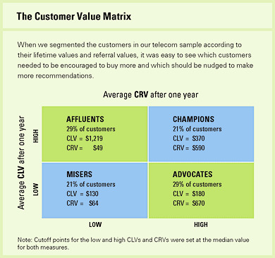

Chapter 7 CLV
“A year’s projected business gives a number that is normally about half of a customer’s full lifetime value, although that can vary by industry.” (Kumar, Petersen, and P.Leone 2007)
(Kumar et al. 2008) CLV model
\[ CLV_i = \sum_{j = T+1}^{T+N} \frac{p(Buy_{ij}=1)\times \hat{CM}_{ij}}{(1+r)^{j-T}} - \frac{\hat{MC}_{ij}}{(1-r)^{j-T}} \]
where
- \(CLV_i\) = lifetime value for customer i,
- \(p(Buy_{ij})\) = predicted probability that customer i will purchase in period j,
- \(CM_{ij}\) = predicted contribution margin provided by customer i in period j,
- \(MC_{ij}\) = predicted marketing costs directed toward customer i in period j,
- \(j\) = index for time periods (semiannual or annual)
- \(T\) = the end of the calibration or observation time frame (usually 1 year projection),
- \(N\) = total number of prediction periods,
- \(r\) = semiannual discount factor (e.g., 0.07238 (Kumar et al. 2008) = 15% annual rate)
7.1 Referral value (CRV)
“Referrals made by customers after a referral-incentive marketing campaign can be attributed to that campaign for about a year.” (Kumar, Petersen, and P.Leone 2007). Hence, we usually count those referrals made after one year of a campaign.
2 types of referral:
- Type-one referral: Would not join without referral.
- Type-two referral: still join without referral.
(Kumar, Petersen, and P.Leone 2007) estimated that each customer made about half type-one and half type-two referrals.
Referral value = PV(Type-one referrals) + PV(Type-two referrals)
where
- PV(type-two referrals) = the prevent value of the savings in acquisition costs.
\[ CRV_i = \sum_{t =1}^{T} \sum_{y = 1}^{n1} \frac{A_{ty} - a_{ty} - M_{ty} + ACQ1_{ty}}{(1+r)^t} + \sum_{t=1}^{T} \sum_{y = n1+1}^{n2} \frac{ACQ2_{ty}}{(1+r)^t} \]
where
- T = the number of periods that will be predicted into the future (e.g., typically 1 year)
- \(A_{ty}\) = the gross margin contributed by customer y who other otherwise would not have bought the product,
- \(a_{ty}\) = the cost of the referral for the customer y (this is what you set up)
- \(n1\) = the number of customers who would not join without the referral,
- \(n2-n1\) = the number of customers who would have joined anyway,
- \(M_{ty}\) = the marketing costs needed to retain the referred customers,
- r = semiannual discount factor ((Kumar et al. 2008) used .07238 = 15% annual rate)
- \(ACQ1_{ty}\) = the savings in acquisition costs from customers who would not join without the referral,
- \(ACQ2_{ty}\) = the savings in acquisition cost from customers who would have joined anyway.
Customers with high CLV does not guarantee high CRV (Kumar, Petersen, and P.Leone 2007). Hence, (Kumar, Petersen, and P.Leone 2007) proposed the customer value matrix

References
Kumar, V., Andrew Petersen, and Robert P.Leone. 2007. “How Valuable Is Word of Mouth?” Harvard Business Review.
Kumar, V., Rajkumar Venkatesan, Tim Bohling, and Denise Beckmann. 2008. “Practice Prize ReportThe Power of CLV: Managing Customer Lifetime Value at IBM.” Marketing Science 27 (4): 585–99. https://doi.org/10.1287/mksc.1070.0319.